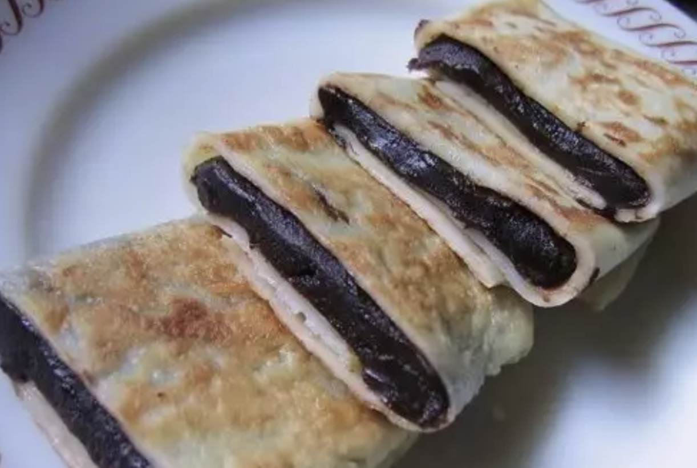

#36 - RED BEAN / DATE PASTE PANCAKE - 豆沙/棗泥鍋餅

INGREDIENTS:
- ½ cup glutinous rice flour
- 1 cup all-purpose flour
- 2 eggs
- 300ml water
- 1 TBSP sugar
- 2 cup red bean paste / red date paste (homemade or store bought)
Directions:
- Sift the glutinous rice flour and all-purpose flour flours into a big bowl.
- Beat the eggs in another bowl and add the water and sugar.
- Mix the egg mixture into the flour until it forms a thin paste with no lumps.
- If lumps form in the batter in step 3, pass it through a sieve to break up the lumps.
- To make the pancake:
- Heat an 8 to 10-inch flat non-stick frying pan. Brush oil to cover the whole frying pan.
- With one hand holding the handle of the frying pan, pour about ¼ cup of the batter into the frying pan. Turn the frying pan in circular motion while adding the batter. The goal is to cover the whole frying pan with the batter.
- Cook for 1 min until the batter at the edge of the frying pan starts to curl.
- Using a spatula, carefully lift the pancake from the edge. Move the spatula under the pancake until the whole pancake separates from the frying pan.
- Lift up and flip the pancake.
- Cook for another 30 sec until the underside has small brown spots.
- Remove the pancake and stack them on a flat plate.
- Repeat step 1) to 7) until all batter finishes.
- Take 1 piece of pancake and put ¼ cup of bean paste on the pancake.
- Wrap it up into 5 x 1 ½ x ½ inch size. Repeat for all pancakes.
- In a frying pan, heat 2 TBSP vegetable oil.
- When hot, pan-fry the wrapped pancake until golden brown on both sides.
- Slice each piece into 4-6 pieces and serve.
- Yield 7-8 pancakes
Homemade red bean paste:
- Rinse and cook 300g red bean in slow cooker until very tender.
- In a wok or frying pan, heat generous amount of oil. When the oil is hot, add in the cooked red bean.
- Add in 100g rock sugar and 100g slab sugar. Cook in low heat.
- Using a spatula to turn the mixture constantly to form uniform consistence.
- Press on the beans to break them up to form smoother paste.
- Cook until the desired consistency.
(Serves 1 person)